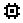
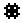
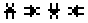

After you draw a duct, you must define each duct segment, junction, and terminal point. Each of these duct components is defined using the icon definition procedure (See Defining Building Component Icons) to display and edit the properties of the component.
Defining Duct Segments
You define each duct segment by using the icon definition procedure on any portion of an undefined duct segment. This will display the "Duct Segment Properties" property sheet. Detailed descriptions of all duct segment properties are given in the Duct Segment Properties section of this manual. Once you have defined the properties of a duct segment, a special icon will be displayed indicating the positive flow direction of the duct segment (see Directional Duct Segment Icons). From now on, you use this icon to access the properties of the duct segment.
When defining a duct segment, you must associate the segment with a duct flow element. CONTAM combines duct flow element data with segment specific data such as length and dynamic losses to determine the frictional resistance, volume, and leakiness of a particular duct segment.
You can also define contaminant filtering properties of duct segments. You can define a filter for each contaminant contained in your CONTAM project. A duct filter could be used, for example, to simulate the deposition of particles on the inside surface of a duct.
As previously mentioned, duct flow elements contain duct leakage information. The CONTAM model implements all leakage at the junctions and terminals of a duct segment. This means that half of the leakage associated with a duct segment occurs at each end of the segment. The leakage between a junction and the zone in which the junction is located (as determined on the SketchPad) is a function of the duct element leakage characteristics and the pressure difference between the junction and the zone. You should consider this leakage model when accounting for leakage of a duct that passes through multiple zones. You should put a least one junction (or terminal) in each zone within which you want to account for duct leakage.
Directional Duct Segment Icons
These are the icons that indicate a defined duct segment. The direction that the small arrow points indicates the positive flow direction of the duct segment.

Defining Duct Junctions and Terminals
You define each duct junction and terminal by using the icon definition procedure on a duct junction or terminal icon. This will display the "Duct Junction Properties" property sheet. If a terminal icon is located in the ambient zone, a Wind Pressure property page will be displayed to allow you to account for the effects of wind pressure on the exterior terminal. The Wind Pressure property page will not be displayed for junction and terminal icons located within non-ambient zones. Detailed descriptions of duct junction properties are given in the Duct Junction and Terminal Properties section of this manual. Once you have defined the properties of a duct junction, a special icon will be displayed indicating the specific type of junction you have selected (see the following list). From now on, you use this icon to access the properties of the duct junction.
| Icon | Description |
|
|
Junction connected to ducts on the same level |
|
 |
Junction connected to the vertical duct of a junction on the level above |
| Junction and downward vertical duct connected to a junction on the level below | |
|
 |
Junction and downward vertical duct connected to a junction on the level below and connected to the vertical duct of a junction on the level above |
| Terminal connected to a duct on the same level | |
|
|
Terminal connected to the vertical duct of a junction on the level above |
|
|
Terminal and downward vertical duct connected to a junction on the level below |